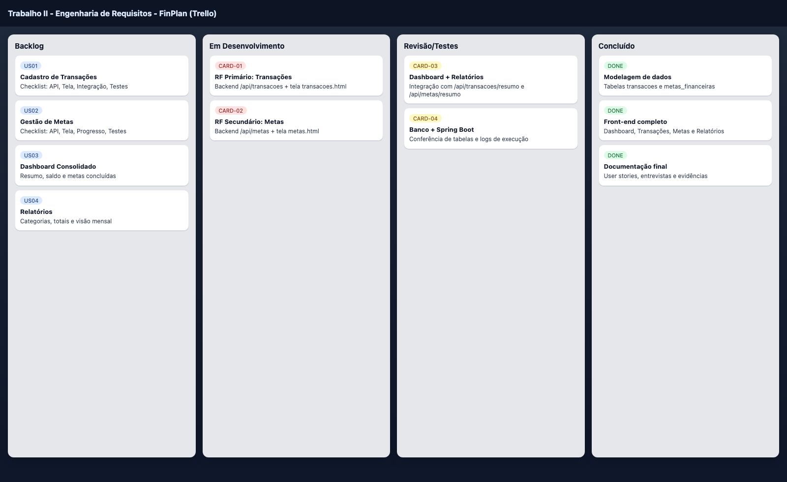
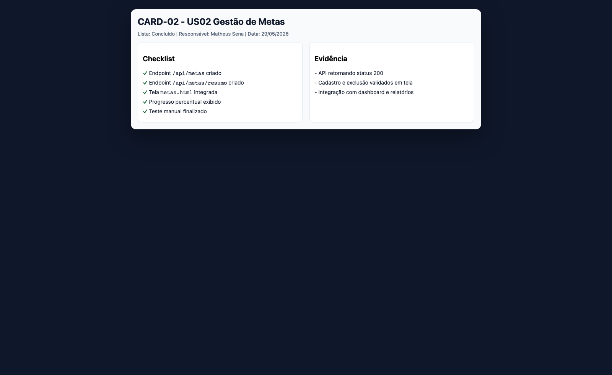
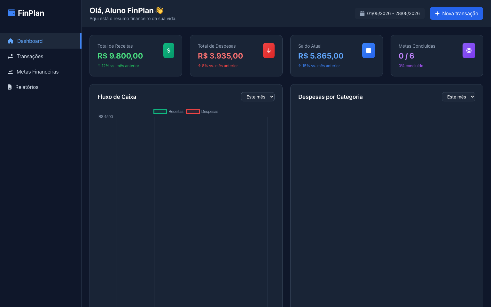
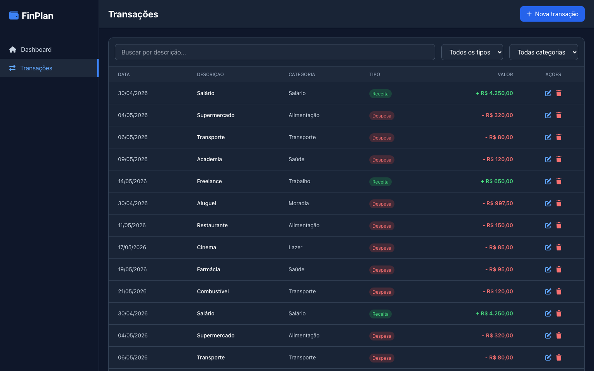
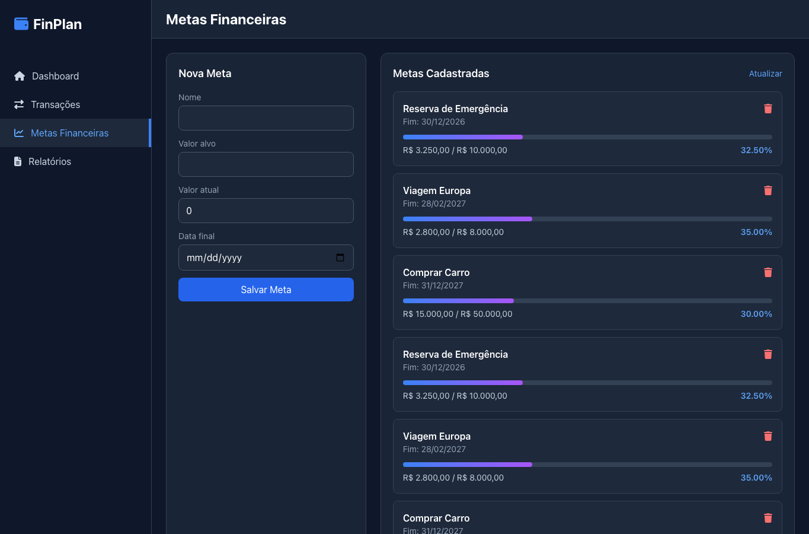
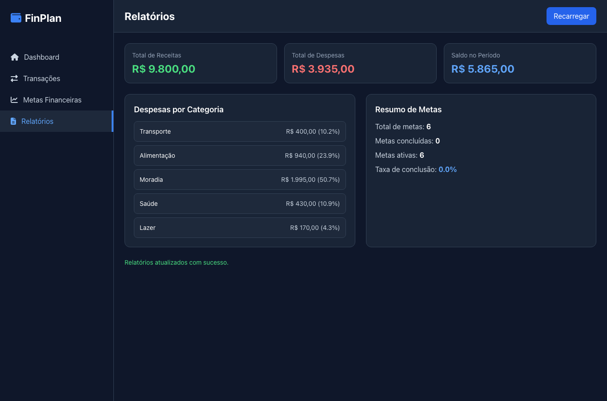

Disciplina: Engenharia de Requisitos
Professor: Msc. Elton Figueiredo da Silva
Projeto: FinPlan - Sistema de Planejamento Financeiro Pessoal
Aluno: Matheus Senna Mascarenhas
Data: 29/05/2026
| ID | User Story | Critérios de Aceite |
|---|---|---|
| US01 | Como usuário, quero cadastrar receitas e despesas para acompanhar minha situação financeira. | CRUD de transações funcionando e refletindo no resumo financeiro. |
| US02 | Como usuário, quero cadastrar metas para acompanhar minha evolução. | CRUD de metas funcionando com exibição de percentual de progresso. |
| US03 | Como usuário, quero visualizar resumo financeiro em uma única tela. | Dashboard exibindo receitas, despesas, saldo e metas concluídas. |
| US04 | Como usuário, quero visualizar relatórios para apoiar decisões. | Tela de relatórios com totais, categorias e resumo de metas. |
| Cartão | Story | Responsável | Status | Evidência |
|---|---|---|---|---|
| CARD-01 | US01 | Matheus Sena | Concluído | Endpoint /api/transacoes + tela transacoes.html. |
| CARD-02 | US02 | Matheus Sena | Concluído | Endpoint /api/metas + tela metas.html. |
| CARD-03 | US03 | Matheus Sena | Concluído | Resumo via /api/transacoes/resumo no dashboard. |
| CARD-04 | US04 | Matheus Sena | Concluído | Tela relatorios.html com /api/transacoes/resumo e /api/metas/resumo. |
Fluxo utilizado no Trello: Backlog -> Em Desenvolvimento -> Revisão/Testes -> Concluído.
Evidência 1 Visão geral do board

Evidência 2 Detalhe de cartão com checklist e status

O front-end foi desenvolvido com HTML, Tailwind e JavaScript, contendo as telas:
index.html)transacoes.html)metas.html)relatorios.html)Dashboard

Transações

Metas Financeiras

Relatórios

Tecnologia: Spring Boot 3, Spring Data JPA e MySQL.
| Requisito | Tipo | Endpoints | Telas Integradas |
|---|---|---|---|
| Cadastro de receitas e despesas | Primário | /api/transacoes, /api/transacoes/resumo, /api/transacoes/ultimas | transacoes.html, index.html, relatorios.html |
| Gestão de metas financeiras | Secundário | /api/metas, /api/metas/ativas, /api/metas/resumo | metas.html, index.html, relatorios.html |
$ curl -s http://localhost:8080/api/transacoes | head -c 300
[{"id":1,"descricao":"Salário","valor":4250.00,"tipo":"RECEITA","categoria":"Salário","data":"2026-05-01","dataCriacao":"2026-05-28T16:18:11"},{"id":2,"descricao":"Supermercado","valor":320.00,"tipo":"DESPESA","categoria":"Alimentação","data":"2026-05-05","dataCriacao":"2026-05-28T16:18:11"},{"i
$ curl -s 'http://localhost:8080/api/transacoes/resumo?inicio=2026-05-01&fim=2026-05-28'
{"totalDespesas":3935.00,"totalReceitas":9800.00,"despesasPorCategoria":{"Transporte":400.00,"Alimentação":940.00,"Moradia":1995.00,"Saúde":430.00,"Lazer":170.00}}
$ curl -s http://localhost:8080/api/metas/resumo
{"metasConcluidas":0,"metasAtivas":[{"id":1,"nome":"Reserva de Emergência","valorAlvo":10000.00,"valorAtual":3250.00,"dataInicio":"2026-01-01","dataFim":"2026-12-31","dataCriacao":"2026-05-28T16:18:11","percentualConcluido":32.50},{"id":4,"nome":"Reserva de Emergência","valorAlvo":10000.00,"valorAtual":3250.00,"dataInicio":"2026-01-01","dataFim":"2026-12-31","dataCriacao":"2026-05-28T16:18:20","percentualConcluido":32.50},{"id":2,"nome":"Viagem Europa","valorAlvo":8000.00,"valorAtual":2800.00,"dataInicio":"2026-03-01","dataFim":"2027-03-01","dataCriacao":"2026-05-28T16:18:11","percentualConcluido":35.00},{"id":5,"nome":"Viagem Europa","valorAlvo":8000.00,"valorAtual":2800.00,"dataInicio":"2026-03-01","dataFim":"2027-03-01","dataCriacao":"2026-05-28T16:18:20","percentualConcluido":35.00},{"id":3,"nome":"Comprar Carro","valorAlvo":50000.00,"valorAtual":15000.00,"dataInicio":"2026-01-01","dataFim":"2028-01-01","dataCriacao":"2026-05-28T16:18:11","percentualConcluido":30.00},{"id":6,"nome":"Comprar Carro","valorAlvo":50000.00,"valorAtual":15000.00,"dataInicio":"2026-01-01","dataFim":"2028-01-01","dataCriacao":"2026-05-28T16:18:20","percentualConcluido":30.00}],"totalMetas":6}
Banco relacional MySQL integrado via JPA. Principais tabelas:
transacoesmetas_financeiras$ mysql -u root -p'***' -e "USE finplan_db; SHOW TABLES;" Tables_in_finplan_db metas_financeiras transacoes $ mysql -u root -p'***' -e "USE finplan_db; SELECT COUNT(*) AS total_transacoes FROM transacoes; SELECT COUNT(*) AS total_metas FROM metas_financeiras;" total_transacoes 20 total_metas 6
Execução padrão do backend: mvn spring-boot:run
$ mvn spring-boot:run ... 63:2026-05-29T11:31:17.311-03:00 INFO 73330 --- [ main] o.s.b.w.embedded.tomcat.TomcatWebServer : Tomcat started on port 8080 (http) with context path '' 64:2026-05-29T11:31:17.316-03:00 INFO 73330 --- [ main] com.finplan.FinPlanApplication : Started FinPlanApplication in 2.394 seconds (process running for 2.579)
Foram realizadas entrevistas semiestruturadas com três perfis de stakeholders para levantar necessidades reais de uso:
| Pergunta | Síntese das respostas | Requisito derivado |
|---|---|---|
| Qual sua principal dificuldade no controle financeiro? | Registrar despesas diariamente e manter categorias organizadas para saber para onde o dinheiro está indo. | RF01 - Cadastro de transações com categoria, tipo e data. |
| O que você precisa ver rapidamente ao abrir o sistema? | Saldo atual, total de receitas e total de despesas do mês em um painel único. | RF03 - Dashboard consolidado com resumo financeiro. |
| Qual funcionalidade ajuda no planejamento de médio prazo? | Metas com valor alvo, valor atual e progresso percentual visível. | RF02 - Gestão de metas financeiras. |
| Que tipo de relatório é mais útil para decisão? | Resumo por categoria de despesa e visão do desempenho no período. | RF04 - Tela de relatórios com totais e categorias. |
Conclusão das entrevistas: os stakeholders priorizaram rastreabilidade de gastos no dia a dia, visão imediata de saldo e acompanhamento de metas, orientando diretamente o escopo implementado.
Repositório publicado: https://github.com/matheussennam/finplan-trabalho2-er
Branch principal: main
Commits principais: 8025613, 8d08bb6.
Conteúdo do repositório inclui código-fonte (front + back), documentação e assets usados na entrega.
finplan/
├── backend/
│ ├── pom.xml
│ ├── src/main/java/com/finplan/
│ │ ├── controller/
│ │ ├── model/
│ │ ├── repository/
│ │ └── service/
│ └── src/main/resources/application.properties
├── frontend/
│ ├── index.html
│ ├── transacoes.html
│ ├── metas.html
│ ├── relatorios.html
│ └── js/app.js
└── docs/
├── assets/
└── entrega_final_completa.pdf
Esta entrega consolida todos os itens obrigatórios solicitados no roteiro da disciplina, com rastreabilidade entre requisitos, implementação e evidências de execução.